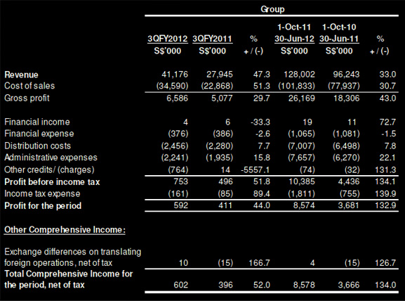
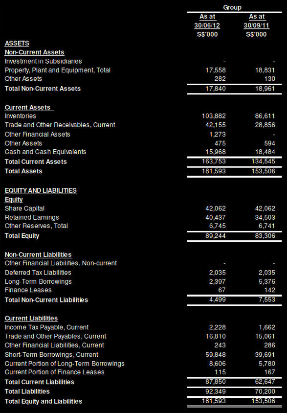

FINANCIAL STATEMENTS AND DIVIDEND ANNOUNCEMENT FOR THE FINANCIAL PERIOD ENDED
30 JUNE 2012
Income Statement

REVIEW OF PERFORMANCE
Statement of Comprehensive Income
Revenue increased by $13.3 million or 47.3% from $27.9 million in 3QFY2011 to $41.2 million in 3QFY2012. Similarly, year on year, revenue has increased by $31.8 million or 33.0% from $96.2 million in FY2011 to $128.0 million in FY2012. The increase is mainly due to revenue generated from the existing customers in the Energy Sector which saw an increase of $30.0 million or 38.1% from $78.8 million in FY2011 to $108.8 million in FY2012.
Gross profit has increased by $1.5 million from $5.1 million in 3QFY2011 to $6.6 million in 3QFY2012 in tandem with the increase in revenue as aforementioned. However, gross profit margin has decreased marginally by 2.2 percentage points from 18.2% in 3QFY2011 to 16.0% in 3QFY2012. Year on year, gross profit has increased by $7.9 million from $18.3 million in FY2011 to $26.2 million in FY2012 and gross profit margin improved by 1.4 percentage points from 19.0% in FY2011 to 20.4% in FY2012.
Financial income decreased by $2 thousand and likewise, financial expense has also decreased by $10 thousand or 2.6% from $386 thousand in 3QFY2011 to $376 thousand in 3QFY2012. Year on year, financial income has increased by $8 thousand from higher interest earned while financial expense decreased by $16 thousand or 1.5%.
Distribution cost has increased marginally by $0.2 million or 7.7% from $2.3 million in 3QFY2011 to $2.5 million in 3QFY2012. Year on year, distribution costs have increased by $0.5 million or 7.8% from $6.5 million in FY2011 to $7.0 million in FY2012. The increase was due to higher manpower costs from an enlarged workforce.
Administrative expenses have also increased marginally by $0.3 million or 15.8% from $1.9 million in 3QFY2011 to $2.2 million in 3QFY2012 which resulted primarily from an increase in the provision of remuneration payable to directors, pursuant to the profit sharing arrangements under their service agreements. The same reason accounted for the year on year increase of $1.4 million from $6.3 million in FY2011 to $7.7 million in FY2012.
Other credits/(charges) have decreased by nearly $0.8 million from a credit of $14 thousand in 3QFY2011 to an outflow of $0.8 million in 3QFY2012. The decrease was mainly due to a higher allowance for doubtful debts.
Our profit before income tax has increased by $0.3 million or 51.8% from $0.5 million in 3QFY011 to $0.8 million in 3QFY2012 due to aforementioned. On a year on year basis, profit before income tax has increased by $6.0 million or 134.1% from $4.4 million in FY2011 to $10.4 million in FY2012.
Statement of Financial Position
Non-current assets decreased by $1.2 million or 5.9% from $19.0 million in September 2011 to $17.8 million in 3QFY2012 from depreciation charged and minimal capital expenditure in the first nine months of the current financial year.
Current assets increased by $29.3 million or 21.7% from $134.5 million in September 2011 to $163.8 million in 3QFY2012. This increase was contributed by both inventories and trade and other receivables. Inventories have increased by $17.3 million or 19.9% from $86.6 million in September 2011 to $103.9 million in 3QFY2012 to meet the obligations of on-going orders as well as the requirements of forthcoming orders. Similarly, trade and other receivables have increased by $13.3 million or 46.1% from $28.9 million in September 2011 to $42.2 million in 3QFY2012 from the increase in sales revenue. To secure the issuance of bank guarantees, an investment of $1.3 million was made in a capital-guaranteed financial asset in the aforesaid bank in 3QFY2012 in lieu of placing such amount in a non-interest bearing deposit.
Non-current liabilities have decreased by $3.1 million or 40.4% from $7.6 million in September 2011 to $4.5 million in 3QFY2012 from repayment of long term loans.
Conversely, current liabilities increased by $25.3 million or 40.2% from $62.6 million in September 2011 to $87.9 million in 3QFY2012 from an increase in short-term borrowings to finance purchases of inventories for both existing as well as for forthcoming sales orders as aforesaid. Short-term borrowings have increased by $20.1 million or 50.8% from $39.7 million in September 2011 to $59.8 million in 3QFY2012. The current portion of long-term borrowings has also contributed to the increase in current liabilities by $2.8 million or 48.9% from $5.8 million in September 2011 to $8.6 million in 3QFY2012. An amount of $4.1 million of the current portion of long-term borrowings resulted from a reclassification from long-term liabilities to short-term liabilities due to the callable nature of the long-term loans.
Statement of Cash Flows
Cash used in operating activities had increased by $0.7 million from $3.9 million in 3QFY2011 to $4.6 million in 3QFY2012. The increase was mainly attributable to lesser receipts of payments from customers. On a year on year basis, there is an inflow of $4.0 million in FY2012 as compared to an outflow of $1.7 million in FY2011 from lesser payments made towards bills payable which are not due for payment.
Cash used in investing activities increased by $1.3 million from $0.1 million in 3QFY2011 to $1.4 million in 3QFY2012 from the investment made in a capital-guaranteed financial asset as aforementioned. Year on year, cash used in investing activities other than the said investment remains relatively stable from minimal capital expenditure.
Cash from financing activities has increased by $1.6 million from $1.5 million in 3QFY2011 to $3.1 million in 3QFY2012 from a drawdown of existing long-term loan facility. Year on year, cash used in financing activities has increased by $1.6 million from $2.8 million in FY2011 to $4.4 million in FY2012 from repayment of loans as well as payment of dividends.
COMMENTARY
For the period April-June 2012, the Group's performance had improved as compared to the same period last year, contributing to the better results for the first three quarters of the current financial year. This is mainly due to the revenue from the Energy Sector, which continues to be an important market for us.
Taking into consideration the financial results of the Group for the first three quarters of the financial year ending 30 September 2012, and barring unforeseen circumstances for the rest of the financial year, we remain cautiously optimistic about the profitability of the Group for the current financial year.
The economic conditions in many parts of the world are still uncertain and most businesses will likely be affected in different ways. Management will maintain its vigilance and efforts in conducting the business activities of the Group.
BALANCE SHEET
